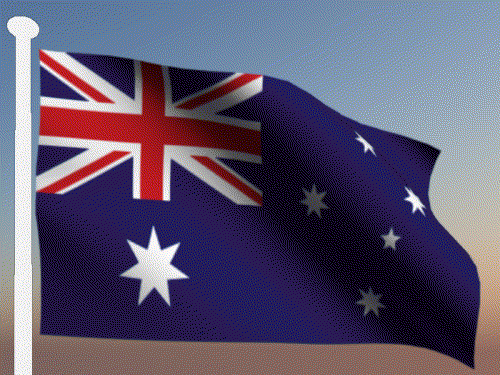
Day 1
First stop is New South Wales ! The first day in the morning, when we arrived at Sydney’s Airport, William was stuck at the airport because he had problems with customs (covid problems). At noon, Nael wanted to eat Australian specialties but he didn’t want to eat fish and chips, because he had already eaten these. We followed him. Kenneth wanted to eat Witchetty Grubs but William and Nael didn't want to. They finally agreed to eat this specialty. (they said it was disgusting, but you should ABSOLUTELY try it). We’ve also eaten “Barramuchi”. After that, Nael said that he has seen a lot of pictures of the Opera House, and he said it is a must-see. However, to enter in this iconic architectural work, Kenneth sacrificed his wallet (no that's a joke it's totally affordable).
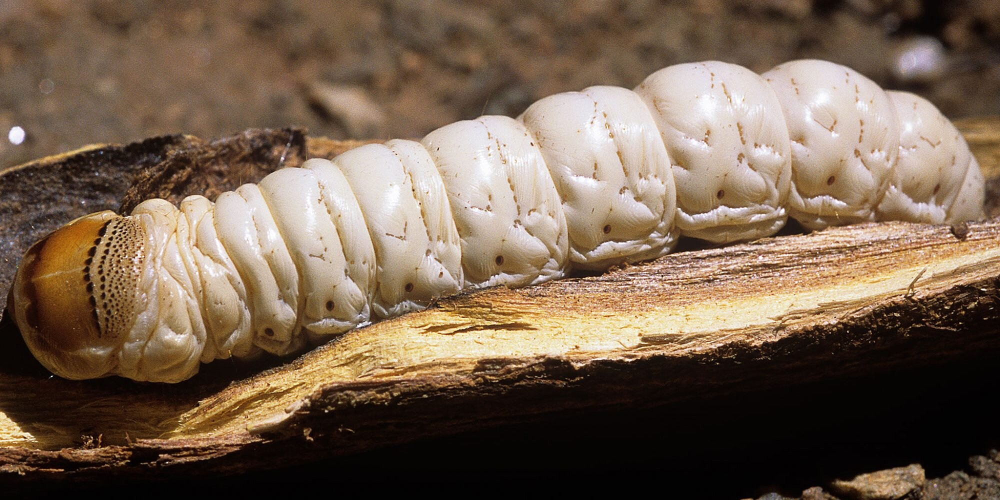 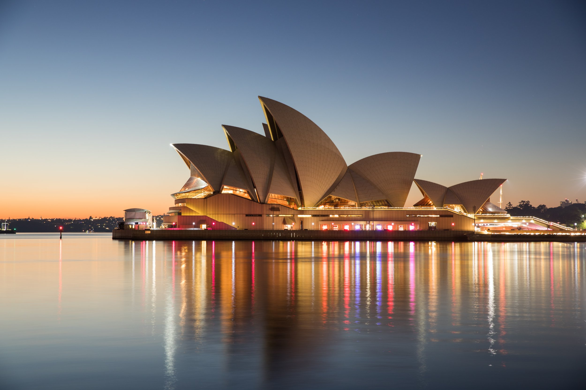
Day 2
We have left Sydney to go hiking in the Blue Mountains. At 6:30pm, we saw the sunrise. It was beautiful, the colors of the dawn will stay in our memories, during the afternoon we ate sandwiches that we bought in a store. It was awful. We were tired ; the trekking hurt our legs. All 3 of us were not prepared for this, we’ve never walked this much! We saw the sunset from the peak of the Blue Mountains. It was wonderful. Next we returned to the hotel to get some rest. Another objective on the bucket list has been completed.
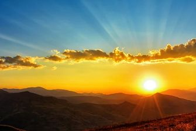
Day 3
Then, we took a train to Melbourne, at 5am. It was difficult for William, who has never woken up this early. We’ve already eaten some meals, like grilled kangaroos so we didn’t eat sandwiches again, we just skied this day, near Melbourne, and we tried all the tracks. The landscape wasn't bad, there was only snow, it was very soothing and cold. We hopped into the Melbourne Star Observation Wheel, in downtown Melbourne, the panoramic view of Melbourne is just : Woah! There aren’t any words to describe how amazing the view is. In the evening, we, Kenneth and Nael, ate a lamb leg roast. It wasn’t that amazing. William decided to go for a walk and relax at the Royal Botanical Gardens.
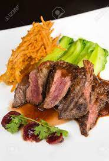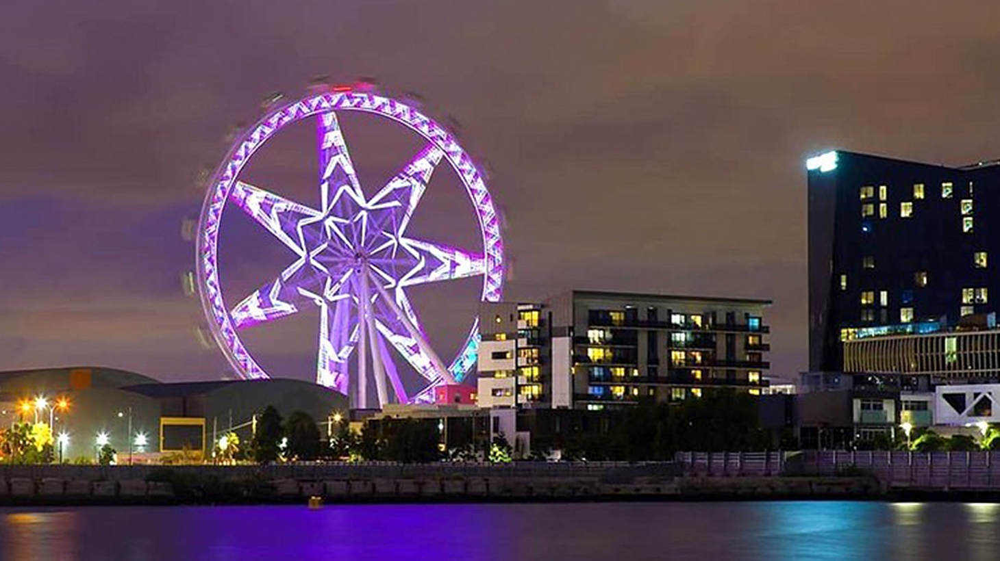
Day 4
Next stop was Queensland ! The first thing that William wanted to do was to test the Kuranda Scenic Railway but we retained him because we had to see what we could do, so we took some rest in the hotel and we spent the day looking for attractions in Cairns, activities at the Great Barrier Reef… (on our computers). Our hotel was just INSANE. It was a 5 star rated hotel. We ordered hamburger with beetroot, and other Australian food. Cairns in the evening is beautiful.
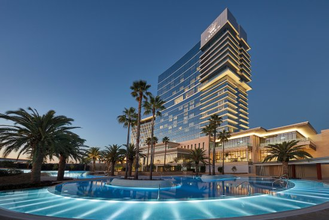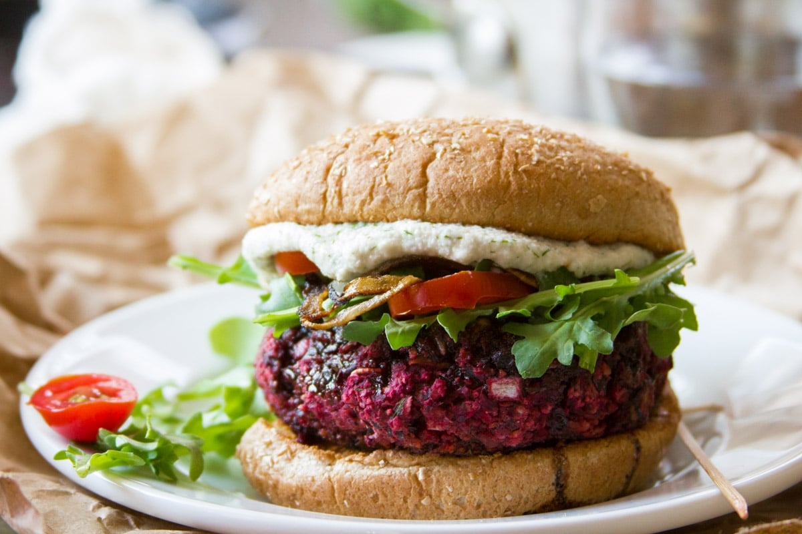
Day 5
It only was during the next day that we did some thrilling experiences (roller coasters), the sensation was present especially for Kenneth, who vomited. The huge installation was just incredible and the roller coasters were unforgettable. We’ve also seen koalas. We stayed in the park for the morning and noon. Then, we visited the Kuranda Scenic Railway. An experience of a lifetime.
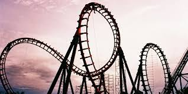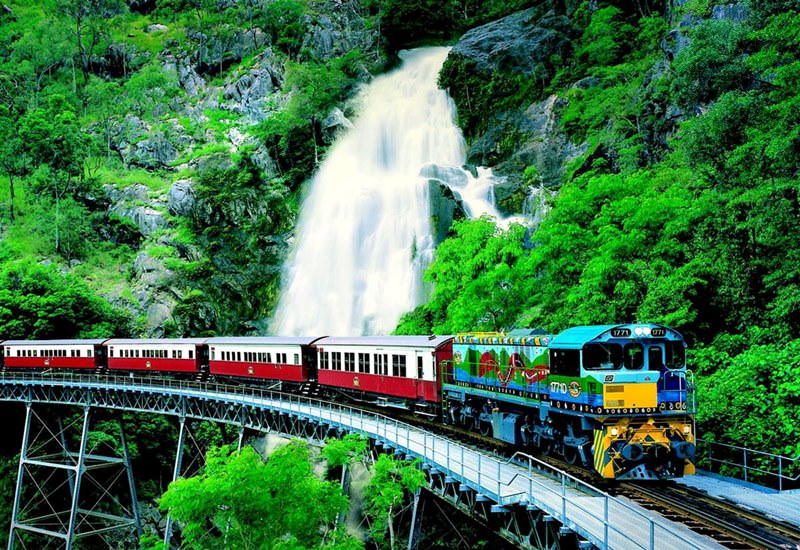
Day 6
This day was divided into three parts. In the morning, we did bungee jumping. We all hesitated to jump. Next we went scuba diving to see the Great Barrier Reef. Nael and William have spoiled themselves because they had already seen pictures of blue-ringed octopus and caterpillars. Fortunately, they’ve never seen the stonefish and the box jellyfish. Finally, we went surfing to relax. This day was rich in strong emotion, it was unforgettable and incredible. We laughed a lot during these experiences.
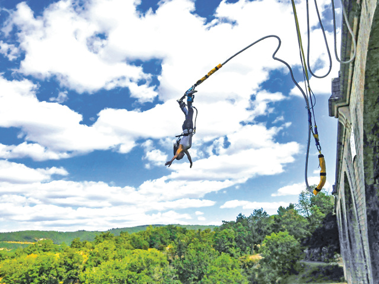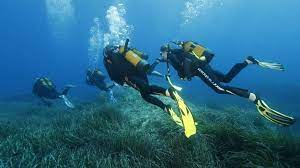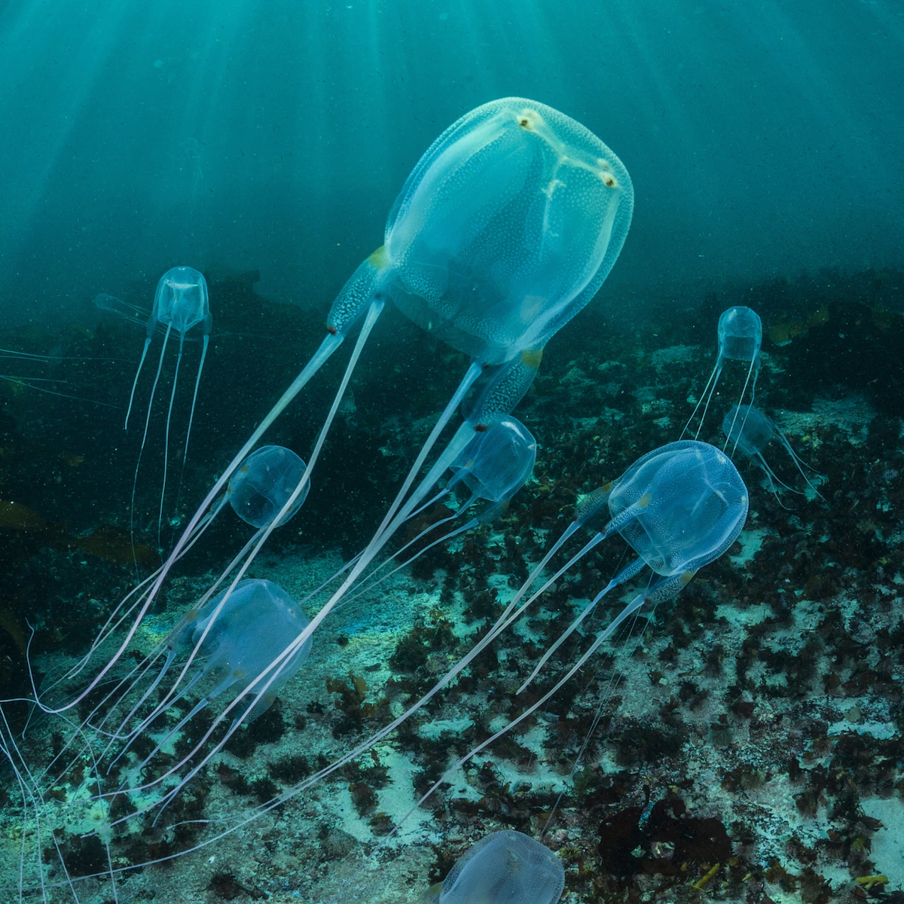
Day 7
In the morning, we took a high speed train to South Australia. There was a problem, William tried boxing a kangaroo and he finished at the hospital. The kangaroo broke William’s ankles during the fight (not surprising after all, he’s not Dwayne Johnson or John Cena). He stayed at the hospital for two days (today and tomorrow). Because we, Nael and Kenneth, are good friends, we stayed with him for one day.
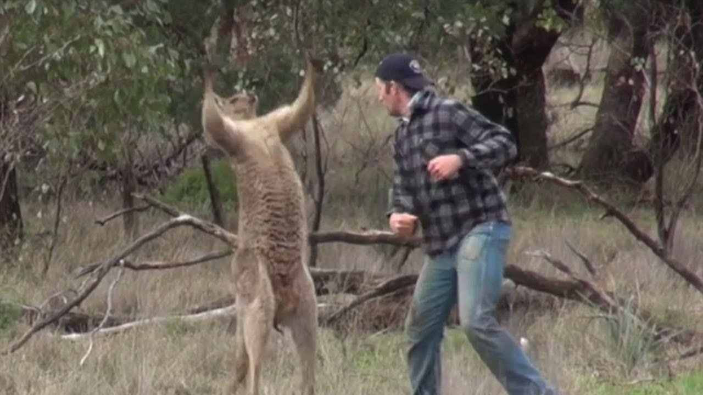
Day 8
The next day, while William was suffering at the hospital, we went kayaking. The water was a bit green and the climate was warm. Unfortunately, we didn’t enjoy it : there were many people (you should go to Lake Eyre in the morning). We had a bit of fun; because of William’s fight against a kangaroo, we didn’t stop to laugh (yeah we aren’t very good friends but you know… We don’t talk about that here).
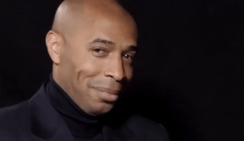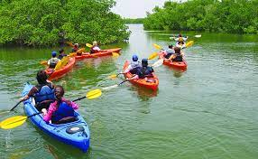
Day 9
When he was out of the hospital we went rafting, it was our first time, we thought we were going to die because our boat moved too much. We’ve already experienced a lot of crazy things. And that’s how we are now in a hotel in South Australia ! We hope that you want to continue to read our adventure in Australia. Don’t leave ! We’ll now explain to you what we’re going to do next week. We’ve never been that hyped in our life before.
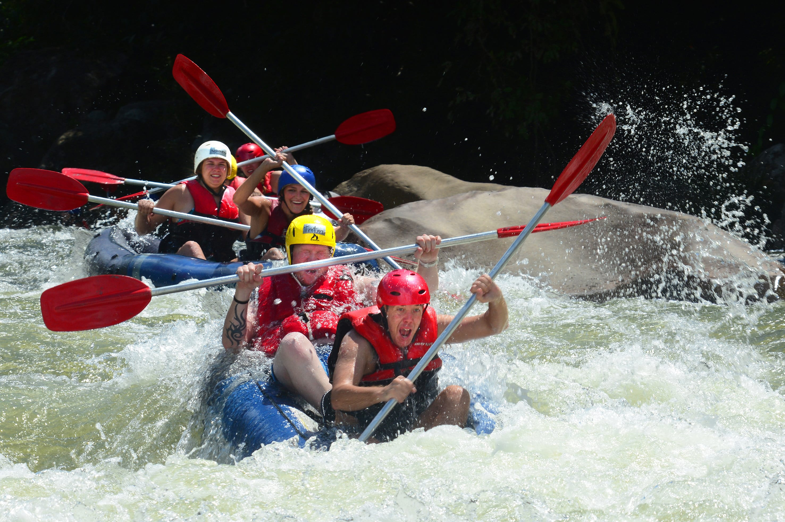
Day 10
We planned to go to the Northern Territory : we would like to see one of the world’s biggest monoliths, the Ayers Rock. Indeed, Kenneth likes this type of thing and we wanted to please him after the Queensland experience. Next we’ll visit Alice Springs Desert Park while William will go surfing on the dune. Nael said he will taste sand. After that, William would like to have a hot air balloon ride but Nael has a fear of heights so we don’t know if we are going to do this but William is determined to convince him. In the evening, we’ll eat lamingtons! An Aussie said that we should try lamingtons, it is one of the best Australian specialties.
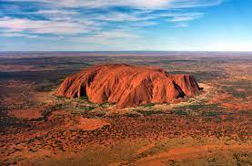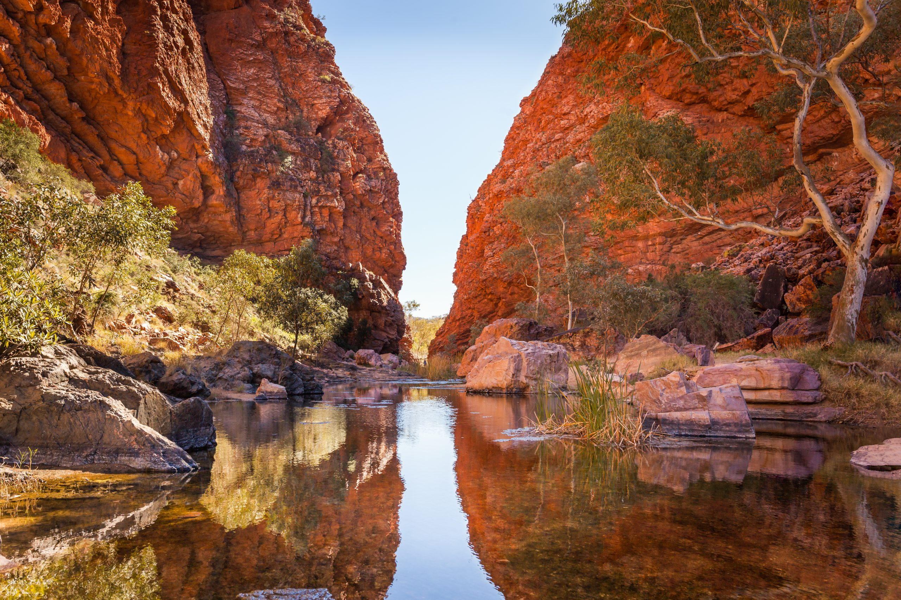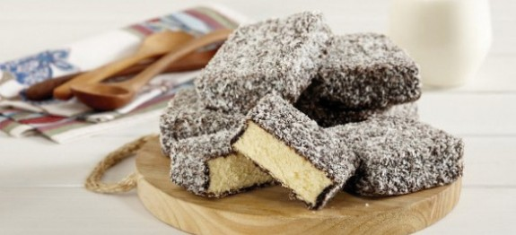
Day 11
The fifth destination is Western Australia. At 9am, Kenneth and William are going to Perth, the most isolated city and the sunniest city in the world. We will just be chilling and enjoying the panoramic view from Kings Park. We hope the view is as incredible as the view at Melbourne. In the afternoon, we are going to do rock climbing all together, and, when we are at the top, we’ll fly a kite, and set a campfire. We’ll then try to sleep on a cliff. It’ll be crazy but difficult ! We’ll buy some chicken parmigiana.
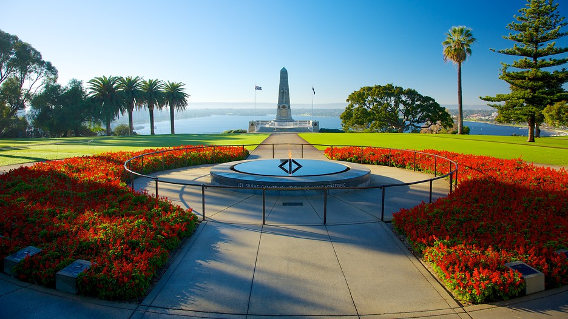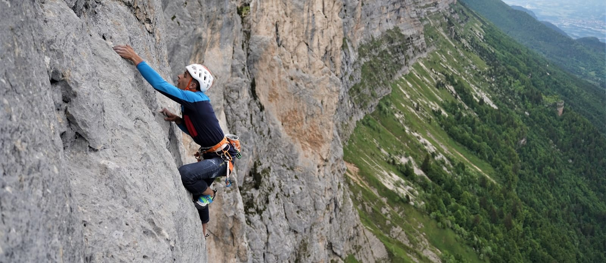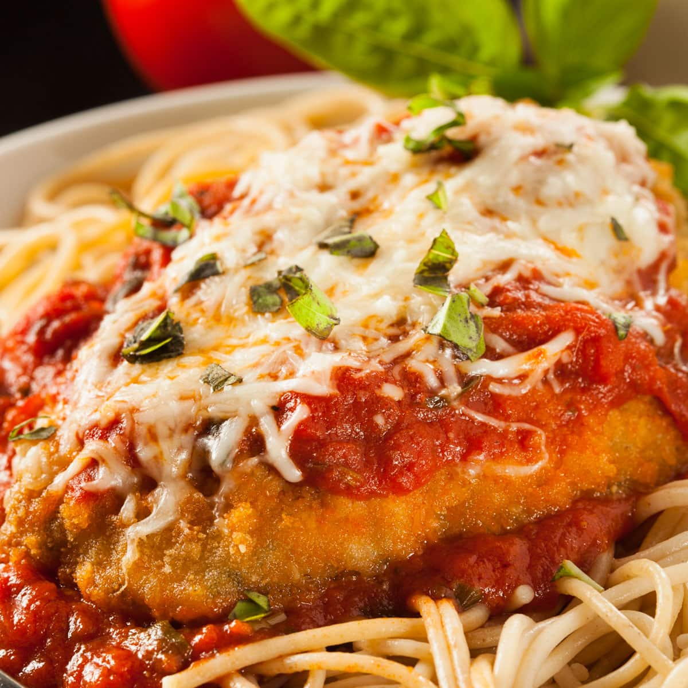
Day 12
Next we’ll go fishing at the South Coast of Australia. William wants to catch a tuna to eat him. We also planned to surf (again) to improve ourselves. Nael is going to go cycling and we are all okay. Then, William is going to bring us to a specific place. He said it’s a surprise. Before the sunset, we’ll just have a camel ride and we’ll post pictures on our Instagram page.
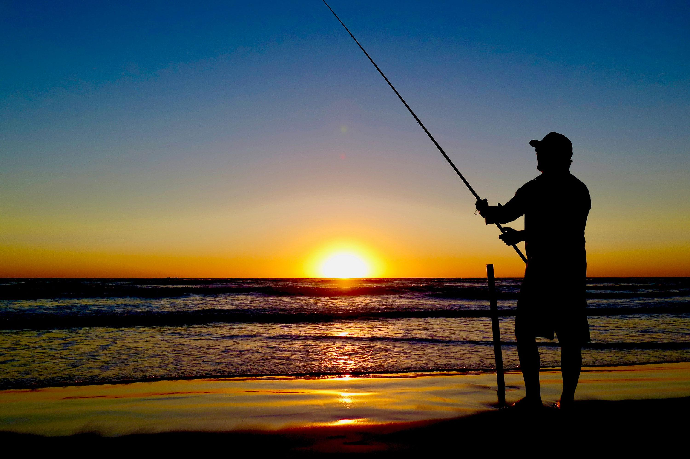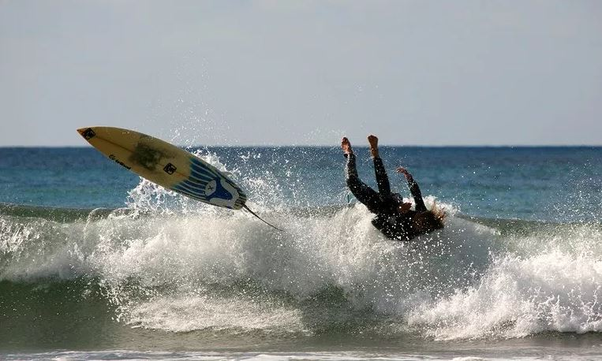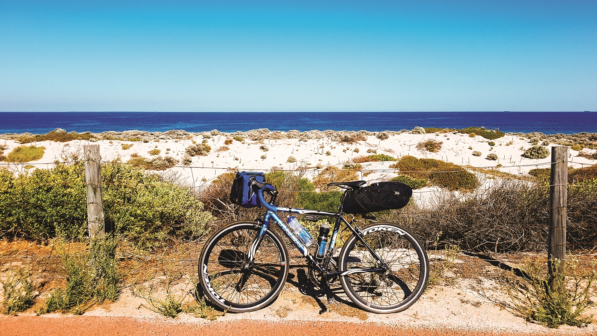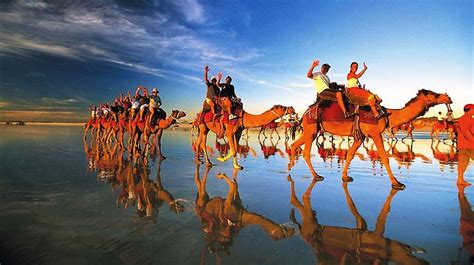
Day 13
We'll go on Tasmania island to tame a Tasmanian devil and William is going to take care of it. He wants to capture a Tasmanian devil, not too big and not too aggressive. We wonder if it’s possible. Kenneth will go for a walk around a waterfall. Nael is going to bring some meat pies that he will buy in downtown Hobart (a city in Tasmania) to the hotel.
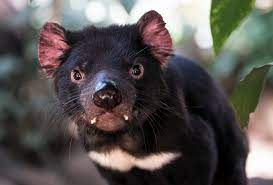

Day 14
Then, we’re going to go on a cruise. We want to relax and enjoy the sea. We will maybe do dolphin/whale/shark-spotting. It’s a cruise around Australia. We’ll get to see the Great Barrier Reef again and maybe, go snorkelling. The cruise’s last stop is Sydney. Before going to Kingsford Smith Sydney Airport, we will go to Centennial Park to meet up with friends that live on this fabulous island. At 9:30pm, we’ll take our flight to return to France.
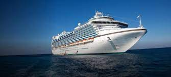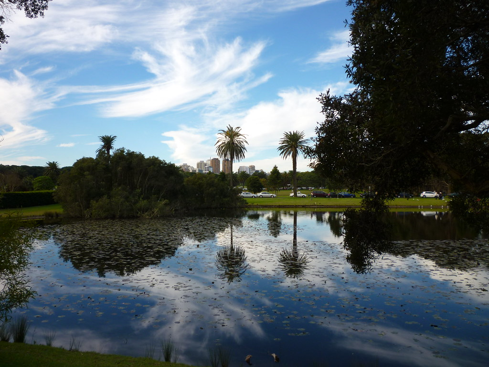
I hope you enjoyed our little adventure, stay tuned to discover what will happen next week! Special thanks to everyone who read our blog !